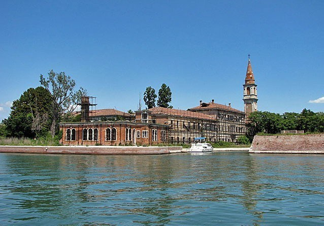

Poveglia, Italia
Poveglia es una isla de la laguna de Venecia. A pesar de su localización al lado de uno de los sitios más visitados del mundo, no es muy conocida. Mucha gente cree que está encantada pues, hace siglos fue una estación de cuarentena para la gente que llegaba a Venecia por el mar, de los cuales algunos sufrían enfermedades contagiosas. En el siglo XX, la isla fue convertida en un hospital psiquiátrico para personas de avanzada edad. Después, fue abandonado en 1960 y no ha sido utilizada desde entonces, aunque hay planes de reconstruirla, quizá, en un hotel de lujo.

Se cuenta, por ejemplo, que en el hospital abandonado que hay en la isla vivió un doctor a principios del siglo pasado que practicó experimentos con enfermos mentales, como lobotomías, y que terminó sus días sucidándose, arrepentido por sus prácticas.
El hecho de que a finales del siglo XVIII el lugar se convirtiera en lugar para aislar a personas con enfermedades infecciosas, como la peste, ha contribuido a incrementar el halo de misterio en torno a la isla.
La mayoría son leyendas difícilmente documentables que mezclan la historia del lugar como estación en la que los marineros de los barcos que llegaban a Venecia enfermos permanecían en cuarentena con la mitología que la rodea.